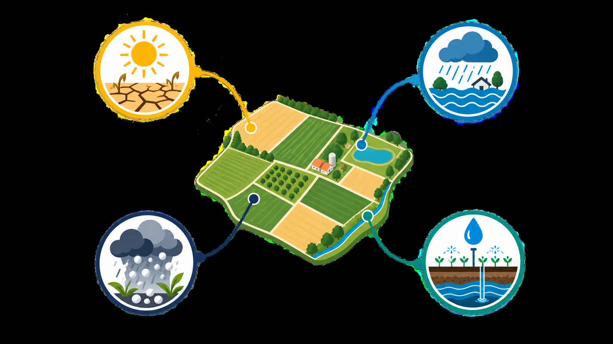

تصاویر نوری
Sentinel‑2 و Landsat 8/9 برای شاخصهای گیاهی و نوع محصول
فناوری
آرتاسَت سه لایه دارد: داده، مدل و تحویل. هر لایه برای یک کار ساخته شده و همه به هم وصلاند.

دادههای باز ماهوارهای و دادههای زمینی، پیشپردازششده و هممرجع.
Sentinel‑2 و Landsat 8/9 برای شاخصهای گیاهی و نوع محصول
Sentinel‑1 برای دیدن سطح آب حتی زیر ابر
ERA5 و ایستگاههای هواشناسی برای بارش، دما و رخدادهای حدی
مدل رقومی ارتفاع و لایههای خاک برای مدلسازی جریان
داده آب سطحی و زیرزمینی برای برآورد دسترسی آب
هر مخاطره با ابزار مناسب خودش مدل میشود.
تشخیص اراضی کشاورزی و نوع محصول از سری زمانی تصاویر
تخمین عملکرد و خسارت، همراه با سهم هر عامل محیطی
شبیهسازی پهنه و عمق سیلاب روی دشت
تخصیص آب سطحی و زیرسطحی در سطح مزرعه
گزارش بازه اطمینان در کنار هر برآورد
خروجیها به همان شکلی میرسند که هر مخاطب کار میکند.
نقشههای تعاملی، روند شاخصها و فهرست قطعههای پرخطر برای کارشناسان و مدیران.
اتصال مستقیم برآوردها به سامانههای صدور و پرداخت غرامت شرکتهای بیمه.
پیام کوتاه و قابل فهم برای کشاورز، پیش از رخداد یا بلافاصله پس از آن.
گزارش مستند خسارت همراه با تحلیل، آماده ارائه به سازمانها و کمیتههای غرامت.
مقیاس
برآوردها برای هر قطعه زمین محاسبه میشوند و سپس بهصورت خودکار در سطح روستا، منطقه و استان تجمیع میشوند؛ کشاورز و مدیر استانی هر دو از یک منبع داده استفاده میکنند.
مدلها با دادههای زمینی و بازدید میدانی سنجیده میشوند.
هر عدد خسارت قابل ردیابی تا داده و عامل سازندهاش است.
همان مدل از یک مزرعه تا یک استان کار میکند.
پایلوت روی منطقه شما، مشارکت تجاری، سرمایهگذاری یا همکاری پژوهشی؛ درخواستتان را ثبت کنید.